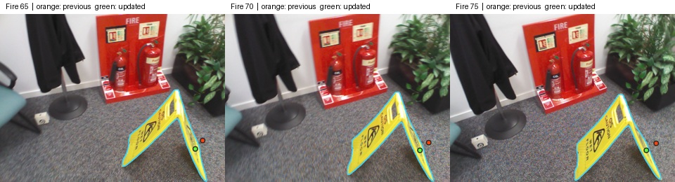

목표 위치 없이 탐색하기
두 방을 둘러보다 전방 RGB에서 목표를 발견하면 다가갑니다. 세 번 연속 가까이 보이면 STOP을 냅니다.
검증 방법과 표지판 지도 보정
탐색기는 두 방의 통로, 자신의 자세, 전방 영상의 목표 검출과 충돌 피드백을 사용합니다. 표적 좌표는 장면 렌더링과 사후 채점에만 사용합니다. 정지 프레임의 검출 중심에서 쏜 광선이 실제 표적에 닿았는지와 정지 거리를 기록했습니다. 이 실험은 운동학 시뮬레이션에서 수행했습니다.

Fire RGB-D 표지판을 여러 시점에서 겹치는 마스크 안쪽에 등록했습니다. 초록 점이 수정한 위치입니다. 프레임별 결과 ↗